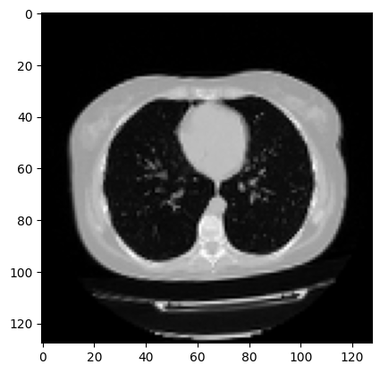
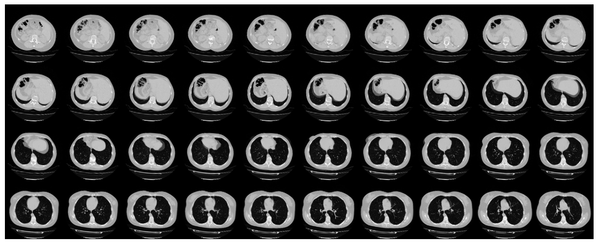
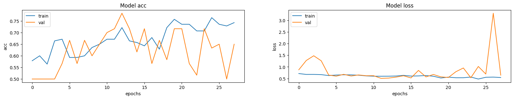

3D image classification from CT scans
Author: Hasib Zunair
Date created: 2020/09/23
Last modified: 2024/01/11
Description: Train a 3D convolutional neural network to predict presence of pneumonia.

Introduction
This example will show the steps needed to build a 3D convolutional neural network (CNN) to predict the presence of viral pneumonia in computer tomography (CT) scans. 2D CNNs are commonly used to process RGB images (3 channels). A 3D CNN is simply the 3D equivalent: it takes as input a 3D volume or a sequence of 2D frames (e.g. slices in a CT scan), 3D CNNs are a powerful model for learning representations for volumetric data.
References
- A survey on Deep Learning Advances on Different 3D DataRepresentations
- VoxNet: A 3D Convolutional Neural Network for Real-Time Object Recognition
- FusionNet: 3D Object Classification Using MultipleData Representations
- Uniformizing Techniques to Process CT scans with 3D CNNs for Tuberculosis Prediction
Setup
import os
import zipfile
import numpy as np
import tensorflow as tf # for data preprocessing
import keras
from keras import layers
Downloading the MosMedData: Chest CT Scans with COVID-19 Related Findings
In this example, we use a subset of the MosMedData: Chest CT Scans with COVID-19 Related Findings. This dataset consists of lung CT scans with COVID-19 related findings, as well as without such findings.
We will be using the associated radiological findings of the CT scans as labels to build a classifier to predict presence of viral pneumonia. Hence, the task is a binary classification problem.
# Download url of normal CT scans.
url = "https://github.com/hasibzunair/3D-image-classification-tutorial/releases/download/v0.2/CT-0.zip"
filename = os.path.join(os.getcwd(), "CT-0.zip")
keras.utils.get_file(filename, url)
# Download url of abnormal CT scans.
url = "https://github.com/hasibzunair/3D-image-classification-tutorial/releases/download/v0.2/CT-23.zip"
filename = os.path.join(os.getcwd(), "CT-23.zip")
keras.utils.get_file(filename, url)
# Make a directory to store the data.
os.makedirs("MosMedData")
# Unzip data in the newly created directory.
with zipfile.ZipFile("CT-0.zip", "r") as z_fp:
z_fp.extractall("./MosMedData/")
with zipfile.ZipFile("CT-23.zip", "r") as z_fp:
z_fp.extractall("./MosMedData/")
Downloading data from https://github.com/hasibzunair/3D-image-classification-tutorial/releases/download/v0.2/CT-0.zip
1045162547/1045162547 ━━━━━━━━━━━━━━━━━━━━ 4s 0us/step
Loading data and preprocessing
The files are provided in Nifti format with the extension .nii. To read the
scans, we use the nibabel package.
You can install the package via pip install nibabel. CT scans store raw voxel
intensity in Hounsfield units (HU). They range from -1024 to above 2000 in this dataset.
Above 400 are bones with different radiointensity, so this is used as a higher bound. A threshold
between -1000 and 400 is commonly used to normalize CT scans.
To process the data, we do the following:
- We first rotate the volumes by 90 degrees, so the orientation is fixed
- We scale the HU values to be between 0 and 1.
- We resize width, height and depth.
Here we define several helper functions to process the data. These functions will be used when building training and validation datasets.
import nibabel as nib
from scipy import ndimage
def read_nifti_file(filepath):
"""Read and load volume"""
# Read file
scan = nib.load(filepath)
# Get raw data
scan = scan.get_fdata()
return scan
def normalize(volume):
"""Normalize the volume"""
min = -1000
max = 400
volume[volume < min] = min
volume[volume > max] = max
volume = (volume - min) / (max - min)
volume = volume.astype("float32")
return volume
def resize_volume(img):
"""Resize across z-axis"""
# Set the desired depth
desired_depth = 64
desired_width = 128
desired_height = 128
# Get current depth
current_depth = img.shape[-1]
current_width = img.shape[0]
current_height = img.shape[1]
# Compute depth factor
depth = current_depth / desired_depth
width = current_width / desired_width
height = current_height / desired_height
depth_factor = 1 / depth
width_factor = 1 / width
height_factor = 1 / height
# Rotate
img = ndimage.rotate(img, 90, reshape=False)
# Resize across z-axis
img = ndimage.zoom(img, (width_factor, height_factor, depth_factor), order=1)
return img
def process_scan(path):
"""Read and resize volume"""
# Read scan
volume = read_nifti_file(path)
# Normalize
volume = normalize(volume)
# Resize width, height and depth
volume = resize_volume(volume)
return volume
Let's read the paths of the CT scans from the class directories.
# Folder "CT-0" consist of CT scans having normal lung tissue,
# no CT-signs of viral pneumonia.
normal_scan_paths = [
os.path.join(os.getcwd(), "MosMedData/CT-0", x)
for x in os.listdir("MosMedData/CT-0")
]
# Folder "CT-23" consist of CT scans having several ground-glass opacifications,
# involvement of lung parenchyma.
abnormal_scan_paths = [
os.path.join(os.getcwd(), "MosMedData/CT-23", x)
for x in os.listdir("MosMedData/CT-23")
]
print("CT scans with normal lung tissue: " + str(len(normal_scan_paths)))
print("CT scans with abnormal lung tissue: " + str(len(abnormal_scan_paths)))
CT scans with normal lung tissue: 100
CT scans with abnormal lung tissue: 100
Build train and validation datasets
Read the scans from the class directories and assign labels. Downsample the scans to have shape of 128x128x64. Rescale the raw HU values to the range 0 to 1. Lastly, split the dataset into train and validation subsets.
# Read and process the scans.
# Each scan is resized across height, width, and depth and rescaled.
abnormal_scans = np.array([process_scan(path) for path in abnormal_scan_paths])
normal_scans = np.array([process_scan(path) for path in normal_scan_paths])
# For the CT scans having presence of viral pneumonia
# assign 1, for the normal ones assign 0.
abnormal_labels = np.array([1 for _ in range(len(abnormal_scans))])
normal_labels = np.array([0 for _ in range(len(normal_scans))])
# Split data in the ratio 70-30 for training and validation.
x_train = np.concatenate((abnormal_scans[:70], normal_scans[:70]), axis=0)
y_train = np.concatenate((abnormal_labels[:70], normal_labels[:70]), axis=0)
x_val = np.concatenate((abnormal_scans[70:], normal_scans[70:]), axis=0)
y_val = np.concatenate((abnormal_labels[70:], normal_labels[70:]), axis=0)
print(
"Number of samples in train and validation are %d and %d."
% (x_train.shape[0], x_val.shape[0])
)
Number of samples in train and validation are 140 and 60.
Data augmentation
The CT scans also augmented by rotating at random angles during training. Since
the data is stored in rank-3 tensors of shape (samples, height, width, depth),
we add a dimension of size 1 at axis 4 to be able to perform 3D convolutions on
the data. The new shape is thus (samples, height, width, depth, 1). There are
different kinds of preprocessing and augmentation techniques out there,
this example shows a few simple ones to get started.
import random
from scipy import ndimage
def rotate(volume):
"""Rotate the volume by a few degrees"""
def scipy_rotate(volume):
# define some rotation angles
angles = [-20, -10, -5, 5, 10, 20]
# pick angles at random
angle = random.choice(angles)
# rotate volume
volume = ndimage.rotate(volume, angle, reshape=False)
volume[volume < 0] = 0
volume[volume > 1] = 1
return volume
augmented_volume = tf.numpy_function(scipy_rotate, [volume], tf.float32)
return augmented_volume
def train_preprocessing(volume, label):
"""Process training data by rotating and adding a channel."""
# Rotate volume
volume = rotate(volume)
volume = tf.expand_dims(volume, axis=3)
return volume, label
def validation_preprocessing(volume, label):
"""Process validation data by only adding a channel."""
volume = tf.expand_dims(volume, axis=3)
return volume, label
While defining the train and validation data loader, the training data is passed through and augmentation function which randomly rotates volume at different angles. Note that both training and validation data are already rescaled to have values between 0 and 1.
# Define data loaders.
train_loader = tf.data.Dataset.from_tensor_slices((x_train, y_train))
validation_loader = tf.data.Dataset.from_tensor_slices((x_val, y_val))
batch_size = 2
# Augment the on the fly during training.
train_dataset = (
train_loader.shuffle(len(x_train))
.map(train_preprocessing)
.batch(batch_size)
.prefetch(2)
)
# Only rescale.
validation_dataset = (
validation_loader.shuffle(len(x_val))
.map(validation_preprocessing)
.batch(batch_size)
.prefetch(2)
)
Visualize an augmented CT scan.
import matplotlib.pyplot as plt
data = train_dataset.take(1)
images, labels = list(data)[0]
images = images.numpy()
image = images[0]
print("Dimension of the CT scan is:", image.shape)
plt.imshow(np.squeeze(image[:, :, 30]), cmap="gray")
Dimension of the CT scan is: (128, 128, 64, 1)
<matplotlib.image.AxesImage at 0x7fc5b9900d50>

Since a CT scan has many slices, let's visualize a montage of the slices.
def plot_slices(num_rows, num_columns, width, height, data):
"""Plot a montage of 20 CT slices"""
data = np.rot90(np.array(data))
data = np.transpose(data)
data = np.reshape(data, (num_rows, num_columns, width, height))
rows_data, columns_data = data.shape[0], data.shape[1]
heights = [slc[0].shape[0] for slc in data]
widths = [slc.shape[1] for slc in data[0]]
fig_width = 12.0
fig_height = fig_width * sum(heights) / sum(widths)
f, axarr = plt.subplots(
rows_data,
columns_data,
figsize=(fig_width, fig_height),
gridspec_kw={"height_ratios": heights},
)
for i in range(rows_data):
for j in range(columns_data):
axarr[i, j].imshow(data[i][j], cmap="gray")
axarr[i, j].axis("off")
plt.subplots_adjust(wspace=0, hspace=0, left=0, right=1, bottom=0, top=1)
plt.show()
# Visualize montage of slices.
# 4 rows and 10 columns for 100 slices of the CT scan.
plot_slices(4, 10, 128, 128, image[:, :, :40])

Define a 3D convolutional neural network
To make the model easier to understand, we structure it into blocks. The architecture of the 3D CNN used in this example is based on this paper.
def get_model(width=128, height=128, depth=64):
"""Build a 3D convolutional neural network model."""
inputs = keras.Input((width, height, depth, 1))
x = layers.Conv3D(filters=64, kernel_size=3, activation="relu")(inputs)
x = layers.MaxPool3D(pool_size=2)(x)
x = layers.BatchNormalization()(x)
x = layers.Conv3D(filters=64, kernel_size=3, activation="relu")(x)
x = layers.MaxPool3D(pool_size=2)(x)
x = layers.BatchNormalization()(x)
x = layers.Conv3D(filters=128, kernel_size=3, activation="relu")(x)
x = layers.MaxPool3D(pool_size=2)(x)
x = layers.BatchNormalization()(x)
x = layers.Conv3D(filters=256, kernel_size=3, activation="relu")(x)
x = layers.MaxPool3D(pool_size=2)(x)
x = layers.BatchNormalization()(x)
x = layers.GlobalAveragePooling3D()(x)
x = layers.Dense(units=512, activation="relu")(x)
x = layers.Dropout(0.3)(x)
outputs = layers.Dense(units=1, activation="sigmoid")(x)
# Define the model.
model = keras.Model(inputs, outputs, name="3dcnn")
return model
# Build model.
model = get_model(width=128, height=128, depth=64)
model.summary()
Model: "3dcnn"
┏━━━━━━━━━━━━━━━━━━━━━━━━━━━━━━━━━┳━━━━━━━━━━━━━━━━━━━━━━━━━━━┳━━━━━━━━━━━━┓ ┃ Layer (type) ┃ Output Shape ┃ Param # ┃ ┡━━━━━━━━━━━━━━━━━━━━━━━━━━━━━━━━━╇━━━━━━━━━━━━━━━━━━━━━━━━━━━╇━━━━━━━━━━━━┩ │ input_layer (InputLayer) │ (None, 128, 128, 64, 1) │ 0 │ ├─────────────────────────────────┼───────────────────────────┼────────────┤ │ conv3d (Conv3D) │ (None, 126, 126, 62, 64) │ 1,792 │ ├─────────────────────────────────┼───────────────────────────┼────────────┤ │ max_pooling3d (MaxPooling3D) │ (None, 63, 63, 31, 64) │ 0 │ ├─────────────────────────────────┼───────────────────────────┼────────────┤ │ batch_normalization │ (None, 63, 63, 31, 64) │ 256 │ │ (BatchNormalization) │ │ │ ├─────────────────────────────────┼───────────────────────────┼────────────┤ │ conv3d_1 (Conv3D) │ (None, 61, 61, 29, 64) │ 110,656 │ ├─────────────────────────────────┼───────────────────────────┼────────────┤ │ max_pooling3d_1 (MaxPooling3D) │ (None, 30, 30, 14, 64) │ 0 │ ├─────────────────────────────────┼───────────────────────────┼────────────┤ │ batch_normalization_1 │ (None, 30, 30, 14, 64) │ 256 │ │ (BatchNormalization) │ │ │ ├─────────────────────────────────┼───────────────────────────┼────────────┤ │ conv3d_2 (Conv3D) │ (None, 28, 28, 12, 128) │ 221,312 │ ├─────────────────────────────────┼───────────────────────────┼────────────┤ │ max_pooling3d_2 (MaxPooling3D) │ (None, 14, 14, 6, 128) │ 0 │ ├─────────────────────────────────┼───────────────────────────┼────────────┤ │ batch_normalization_2 │ (None, 14, 14, 6, 128) │ 512 │ │ (BatchNormalization) │ │ │ ├─────────────────────────────────┼───────────────────────────┼────────────┤ │ conv3d_3 (Conv3D) │ (None, 12, 12, 4, 256) │ 884,992 │ ├─────────────────────────────────┼───────────────────────────┼────────────┤ │ max_pooling3d_3 (MaxPooling3D) │ (None, 6, 6, 2, 256) │ 0 │ ├─────────────────────────────────┼───────────────────────────┼────────────┤ │ batch_normalization_3 │ (None, 6, 6, 2, 256) │ 1,024 │ │ (BatchNormalization) │ │ │ ├─────────────────────────────────┼───────────────────────────┼────────────┤ │ global_average_pooling3d │ (None, 256) │ 0 │ │ (GlobalAveragePooling3D) │ │ │ ├─────────────────────────────────┼───────────────────────────┼────────────┤ │ dense (Dense) │ (None, 512) │ 131,584 │ ├─────────────────────────────────┼───────────────────────────┼────────────┤ │ dropout (Dropout) │ (None, 512) │ 0 │ ├─────────────────────────────────┼───────────────────────────┼────────────┤ │ dense_1 (Dense) │ (None, 1) │ 513 │ └─────────────────────────────────┴───────────────────────────┴────────────┘
Total params: 1,352,897 (5.16 MB)
Trainable params: 1,351,873 (5.16 MB)
Non-trainable params: 1,024 (4.00 KB)
Train model
# Compile model.
initial_learning_rate = 0.0001
lr_schedule = keras.optimizers.schedules.ExponentialDecay(
initial_learning_rate, decay_steps=100000, decay_rate=0.96, staircase=True
)
model.compile(
loss="binary_crossentropy",
optimizer=keras.optimizers.Adam(learning_rate=lr_schedule),
metrics=["acc"],
run_eagerly=True,
)
# Define callbacks.
checkpoint_cb = keras.callbacks.ModelCheckpoint(
"3d_image_classification.keras", save_best_only=True
)
early_stopping_cb = keras.callbacks.EarlyStopping(monitor="val_acc", patience=15)
# Train the model, doing validation at the end of each epoch
epochs = 100
model.fit(
train_dataset,
validation_data=validation_dataset,
epochs=epochs,
shuffle=True,
verbose=2,
callbacks=[checkpoint_cb, early_stopping_cb],
)
Epoch 1/100
70/70 - 40s - 568ms/step - acc: 0.5786 - loss: 0.7128 - val_acc: 0.5000 - val_loss: 0.8744
Epoch 2/100
70/70 - 26s - 370ms/step - acc: 0.6000 - loss: 0.6760 - val_acc: 0.5000 - val_loss: 1.2741
Epoch 3/100
70/70 - 26s - 373ms/step - acc: 0.5643 - loss: 0.6768 - val_acc: 0.5000 - val_loss: 1.4767
Epoch 4/100
70/70 - 26s - 376ms/step - acc: 0.6643 - loss: 0.6671 - val_acc: 0.5000 - val_loss: 1.2609
Epoch 5/100
70/70 - 26s - 374ms/step - acc: 0.6714 - loss: 0.6274 - val_acc: 0.5667 - val_loss: 0.6470
Epoch 6/100
70/70 - 26s - 372ms/step - acc: 0.5929 - loss: 0.6492 - val_acc: 0.6667 - val_loss: 0.6022
Epoch 7/100
70/70 - 26s - 374ms/step - acc: 0.5929 - loss: 0.6601 - val_acc: 0.5667 - val_loss: 0.6788
Epoch 8/100
70/70 - 26s - 378ms/step - acc: 0.6000 - loss: 0.6559 - val_acc: 0.6667 - val_loss: 0.6090
Epoch 9/100
70/70 - 26s - 373ms/step - acc: 0.6357 - loss: 0.6423 - val_acc: 0.6000 - val_loss: 0.6535
Epoch 10/100
70/70 - 26s - 374ms/step - acc: 0.6500 - loss: 0.6127 - val_acc: 0.6500 - val_loss: 0.6204
Epoch 11/100
70/70 - 26s - 374ms/step - acc: 0.6714 - loss: 0.5994 - val_acc: 0.7000 - val_loss: 0.6218
Epoch 12/100
70/70 - 26s - 374ms/step - acc: 0.6714 - loss: 0.5980 - val_acc: 0.7167 - val_loss: 0.5069
Epoch 13/100
70/70 - 26s - 369ms/step - acc: 0.7214 - loss: 0.6003 - val_acc: 0.7833 - val_loss: 0.5182
Epoch 14/100
70/70 - 26s - 372ms/step - acc: 0.6643 - loss: 0.6076 - val_acc: 0.7167 - val_loss: 0.5613
Epoch 15/100
70/70 - 26s - 373ms/step - acc: 0.6571 - loss: 0.6359 - val_acc: 0.6167 - val_loss: 0.6184
Epoch 16/100
70/70 - 26s - 374ms/step - acc: 0.6429 - loss: 0.6053 - val_acc: 0.7167 - val_loss: 0.5258
Epoch 17/100
70/70 - 26s - 370ms/step - acc: 0.6786 - loss: 0.6119 - val_acc: 0.5667 - val_loss: 0.8481
Epoch 18/100
70/70 - 26s - 372ms/step - acc: 0.6286 - loss: 0.6298 - val_acc: 0.6667 - val_loss: 0.5709
Epoch 19/100
70/70 - 26s - 372ms/step - acc: 0.7214 - loss: 0.5979 - val_acc: 0.5833 - val_loss: 0.6730
Epoch 20/100
70/70 - 26s - 372ms/step - acc: 0.7571 - loss: 0.5224 - val_acc: 0.7167 - val_loss: 0.5710
Epoch 21/100
70/70 - 26s - 372ms/step - acc: 0.7357 - loss: 0.5606 - val_acc: 0.7167 - val_loss: 0.5444
Epoch 22/100
70/70 - 26s - 372ms/step - acc: 0.7357 - loss: 0.5334 - val_acc: 0.5667 - val_loss: 0.7919
Epoch 23/100
70/70 - 26s - 373ms/step - acc: 0.7071 - loss: 0.5337 - val_acc: 0.5167 - val_loss: 0.9527
Epoch 24/100
70/70 - 26s - 371ms/step - acc: 0.7071 - loss: 0.5635 - val_acc: 0.7167 - val_loss: 0.5333
Epoch 25/100
70/70 - 26s - 373ms/step - acc: 0.7643 - loss: 0.4787 - val_acc: 0.6333 - val_loss: 1.0172
Epoch 26/100
70/70 - 26s - 372ms/step - acc: 0.7357 - loss: 0.5535 - val_acc: 0.6500 - val_loss: 0.6926
Epoch 27/100
70/70 - 26s - 370ms/step - acc: 0.7286 - loss: 0.5608 - val_acc: 0.5000 - val_loss: 3.3032
Epoch 28/100
70/70 - 26s - 370ms/step - acc: 0.7429 - loss: 0.5436 - val_acc: 0.6500 - val_loss: 0.6438
<keras.src.callbacks.history.History at 0x7fc5b923e810>
It is important to note that the number of samples is very small (only 200) and we don't specify a random seed. As such, you can expect significant variance in the results. The full dataset which consists of over 1000 CT scans can be found here. Using the full dataset, an accuracy of 83% was achieved. A variability of 6-7% in the classification performance is observed in both cases.
Visualizing model performance
Here the model accuracy and loss for the training and the validation sets are plotted. Since the validation set is class-balanced, accuracy provides an unbiased representation of the model's performance.
fig, ax = plt.subplots(1, 2, figsize=(20, 3))
ax = ax.ravel()
for i, metric in enumerate(["acc", "loss"]):
ax[i].plot(model.history.history[metric])
ax[i].plot(model.history.history["val_" + metric])
ax[i].set_title("Model {}".format(metric))
ax[i].set_xlabel("epochs")
ax[i].set_ylabel(metric)
ax[i].legend(["train", "val"])

Make predictions on a single CT scan
# Load best weights.
model.load_weights("3d_image_classification.keras")
prediction = model.predict(np.expand_dims(x_val[0], axis=0))[0]
scores = [1 - prediction[0], prediction[0]]
class_names = ["normal", "abnormal"]
for score, name in zip(scores, class_names):
print(
"This model is %.2f percent confident that CT scan is %s"
% ((100 * score), name)
)
1/1 ━━━━━━━━━━━━━━━━━━━━ 0s 478ms/step
1/1 ━━━━━━━━━━━━━━━━━━━━ 0s 479ms/step
This model is 32.99 percent confident that CT scan is normal
This model is 67.01 percent confident that CT scan is abnormal